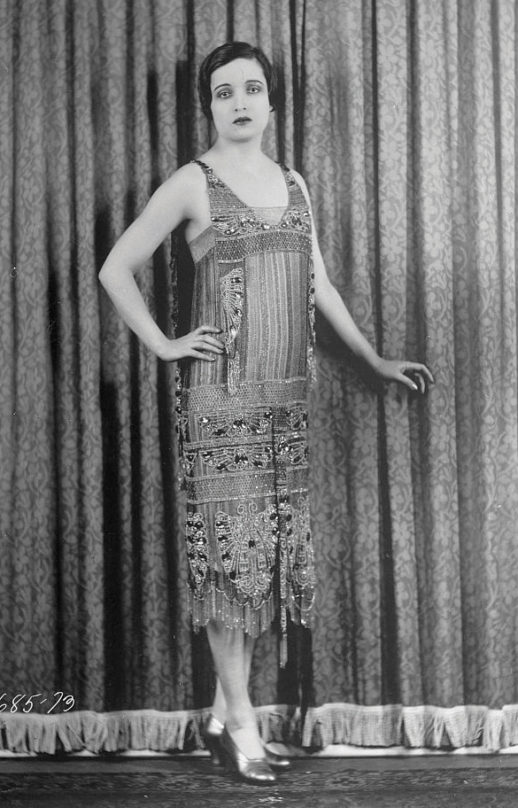
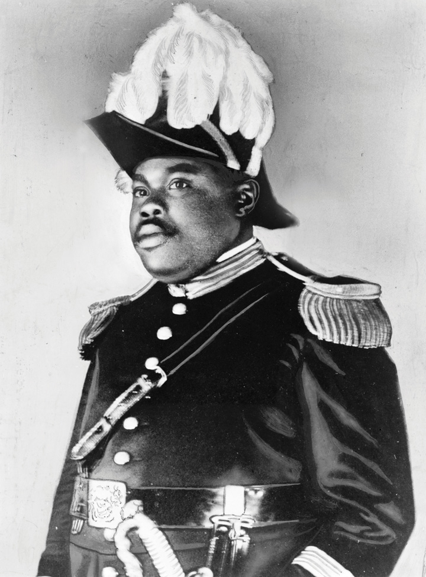
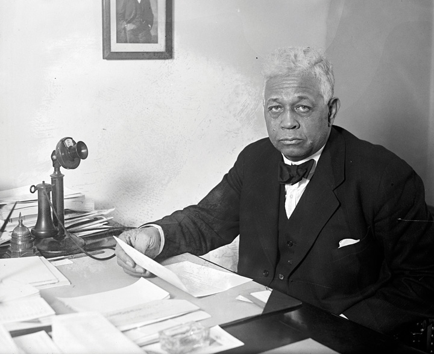
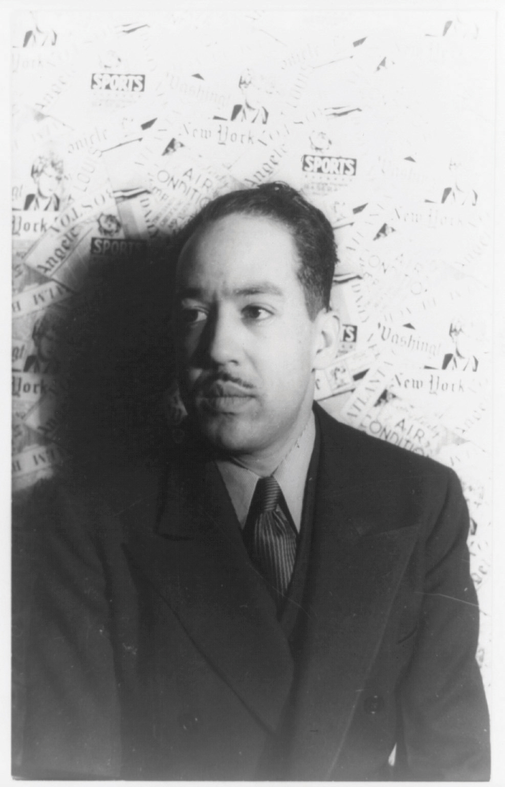
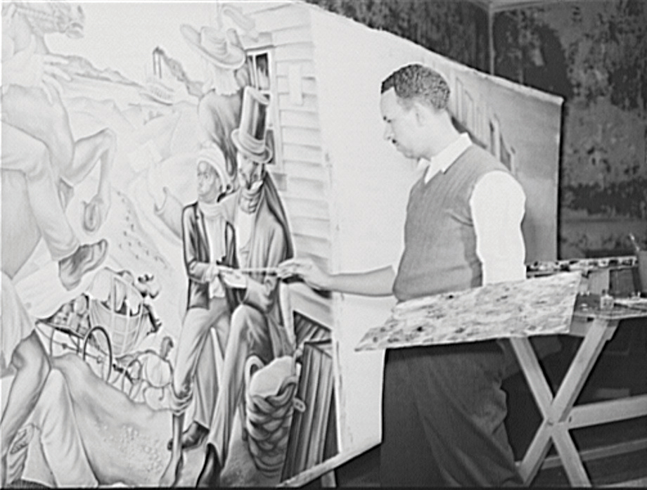

The failure of Prohibition led to greater toleration for lawbreakers and demonstrated that American culture was moving away from traditional views. The rise of consumerism had an even greater influence on the culture of the 1920s with its celebration of worldly values such as acquisition and consumption. Americans had always longed for material security and even a few luxuries; the difference was that during the 1920s, the balance between luxury and security had become skewed. Generations of farmers and artisans had viewed credit as a necessary evil, a partial surrender of one’s independence that was permissible only in the acquisition of productive property such as land and equipment. The use of credit for any other purpose, especially luxury items such as appliances and automobiles, was nearly unthinkable. By the 1920s, credit was no longer viewed as a surrender of one’s liberty but rather as a vehicle by which to enjoy the fruits of modernity. For some, creditworthiness was next to godliness—a symbol that one had been judged as successful and trustworthy.
Figure 6.19
Alice Joyce was a leading actress of the 1920s. Her dress in this image demonstrates the use of straight lines among flappers. The term “flapper” was originally pejorative and based on a gendered perception of a pitiable young bird that tried to show its independence from its mother and nest as it flapped its wings.
For others, credit appeared to offer the promise of liberation from a life of living paycheck to paycheck. Mass production meant that goods once regarded as luxury items became more readily available at much more favorable prices. Most urban families by the end of the 1920s owned an automobile. Nearly everyone could afford a radio, and those who could not could at least purchase a homemade radio kit that permitted one to receive signals. Mass marketing spurred mass consumption, democratized desire, and convinced more and more Americans that a life of more goods was indeed the good life. As a result, Americans’ suspicion of the wealthy declined during the 1920s, and money increasingly became the principal measure of value in a more secular society. As consumer culture replaced traditional mores in the economic realm, a faster and more secular culture even began to alter notions of gender and sexual morality.
Although changes in gender relations and sexual expression during the 1920s seems modest when viewed from the perspective of the twenty-first century, contemporaries perceived these changes as revolutionary. The increasing agency expressed by women and the changing fashions of the era were certainly not new, as Victorian modes of behavior had always been challenged. Young men and young women had long engaged in sexual exploration, short of and including intercourse. What was new about the 1920s is that “respectable” young women were no longer willing to pretend as if these behaviors and the desires behind them did not exist. New words such as “petting” entered polite society, even if the behaviors they described had long existed behind a veil of Victorian discretion.
For most women, gendered notions of modesty remained the highest expression of their virtue. The difference was that the 1920s were host to public acknowledgment that a mutually satisfying sexual connection was a sign of a healthy relationship rather than a warning sign of female insatiability. At the same time, modern attitudes regarding sex cohabited with antiquated notions about hymeneal purity in ways that continued to reinforce misogynistic attitudes and practices.
The fashions of the 1920s were also a continuation of earlier trends toward simpler and more practical attire. This process was accelerated by the need for metal during the war, which led patriotic women to donate their corsets just as they had in the Civil War. Apparently, these metal and leather contraptions were not missed by many women in the 1920s, and corset sales never recovered. By the 1920s, popular dresses were still quite modest, extending just below the knee. What was novel about the style of the “flapperIntended as a condescending label for the young women who embraced the new fashions and lifestyles of 1920s popular culture, “flappers” were women who sought to express their independence from Victorian notions of gender. Known for wearing slightly shorter and looser dresses, applying darker shades of makeup, and engaging in behaviors previously considered “unfeminine,” such as smoking, flappers also sought to embrace their views about sexuality rather than simply being the object of male lust.” was that these women adhered to a new standard of beauty based around straight lines and shorter hair. Flappers enjoyed new dance moves that encouraged movement and a few sparks of flirtatious suggestion. Whereas the dresses worn by the idealized Gibson Girl of the turn of the century emphasized the female form, the flapper’s gown minimized her hips. Some flappers even attempted to minimize their bust with tightly woven fabric.
Young women were increasingly likely to leave home and experience at least a few years of independence at college prior to marriage. Only 2 percent of young adults attended college at the turn of the century, but only two decades later, that number increased to 7 percent. Colleges doubled in size and then doubled again in this short time, creating virtual cities of youths complete with dormitories and a rapid proliferation of fraternities and sororities. A quarter of students belonged to one of these Greek organizations.
While it was socially acceptable for young men to live alone or with their peers, young women were expected to room with a respectable married family who would also become their chaperones and surrogate parents. By 1920, young women were attending college in nearly equal numbers as young men, leading to a shortage of boarding opportunities for young women. In response, many of the first dormitories were reserved for women. College dormitories provided a home for unmarried female students known as “coeds.” Colleges employed older women to live in the dormitories and serve as surrogate mothers for these coeds, each enforcing a strict set of rules and curfews. The perceived need for these “dorm mothers” was spread by contemporary novels such as Flaming Youth, which created the stereotype of college life as a time of rebellion and sexual adventure. However, most college students in the 1920s rejected styles of “fast living” that college would later be associated with.
Figure 6.20

The University of Kentucky women’s basketball team was one of the best in the nation during the early 1920s. The team in this photo enjoyed an undefeated season. In 1924, however, the University followed the trend of disbanding their women’s teams believing that competitive team sports was not appropriate for women.
For most college women of the 1920s, the fashionable lifestyle of the flapper was exciting but little more than a temporary diversion from their goal of marriage and motherhood. A flapper could express her independence through wearing makeup, smoking, drinking, and other behaviors once considered “unladylike.” Each of these behaviors might have appeared as a minor scandal among a college-aged woman’s middle-class family, but they were not the most enduring symbol of gender liberation.
Flappers and the newly independent generation of college women lived in a space between the patriarchy of their father’s home and the domestic realm they would create with her future husbands. These women were even known to go out at night with other women, eschewing the once-obligatory male chaperone. These formative years of at least temporary liberation from the constant “supervision” of men was perhaps the most obvious assertion of female independence. This independence was more than a rite of passage for future generations. Women’s experiences in college encouraged greater assertiveness among well-educated women and demonstrated that the new “independent woman” of the era was compatible with middle-class respectability.
At the same time, the 1920s and colleges were conservative institutions that reflected the political and economic orthodoxy of the era. Women were steered toward a handful of majors and discouraged from direct competition with men in the classroom or in extracurricular activities. By the mid-1920s, women were even discouraged from competition with one another. Intercollegiate women’s athletics had grown from the 1880s to the 1920s, and audiences rivaled men’s sports outside of football. By the mid-1920s, reformers argued that strenuous athletic activity was both unfeminine and dangerous to reproductive health. Women’s competitive leagues were disbanded and replaced with “play days” where women from various colleges participated in noncompetitive games. The participants were even barred from forming teams that represented their institutions. Instead, the women were divided evenly among other schools to prevent an “unfeminine” spirit of aggressive competition.
A trial in the heart of Tennessee came to represent the changing culture of the 1920s, as well as those who sought to preserve traditional views. John Scopes, a recent graduate of the University of Kentucky, was teaching biology in Dayton, Tennessee, when he was found in violation of a state law that prohibited the teaching of Charles Darwin’s theory of evolution. Darwin’s theories were taught throughout the United States at the time, but they raised the ire of conservatives and evangelicals who believed that evolution ran counter to deeply held religious beliefs about the divine creation of man. In 1925, leading public figures such as William Jennings Bryan arose to defend the state law of Tennessee. Clarence Darrow agreed to defend Scopes’s right to academic freedom. The resulting trial, known as the Scopes Monkey TrialA highly publicized trial of high school teacher John Scopes who violated a Tennessee law that forbade the teaching of evolution. The trial would become emblematic of the culture wars of the early twentieth century between conservative Christian fundamentalists and modernists who tended to be more secular and liberal., quickly descended into a media circus. As news reporters covered the trial’s proceedings via live radio, Americans everywhere tuned in to listen as the academics squared off against the defenders of tradition and old-time religion.
One of the reasons Bryan agreed to defend the Tennessee law was that Darwin’s theories about evolution were also being used to support eugenicists who advocated sterilization of minorities, which Bryan felt was un-American. However, the bulk of Bryan’s argument was based on the idea that the teaching of evolution and the increasingly secular nature of public education threatened the values of rural America. The actual violation of the state law itself was hardly denied, and the trial soon became more of cultural debate than an investigation of the validity of the Tennessee law. Scopes himself was found guilty and fined $100, although he was never required to pay upon appeal.
The notoriety surrounding the trial led most Americans to hold their own debates about the separation of church and state. Most urban reporters believed that the brilliant attorney Clarence Darrow humiliated the devoutly religious Bryan. However, for many Americans, Bryan’s declared belief in the literal translation of the Bible was nothing to be ashamed of. Even if the trial resulted in a moral victory for the forces of modern science and secular education, rural Americans, especially rural Southerners, often relished lost causes. For them, the attack upon a law they believed defended their children from heretical theories represented the way urban America, liberals, the federal government, and an increasingly worldly culture threatened their way of life. For the rest of the nation, liberal condescension toward evangelicals and rural Southerners appeared inconsistent with values such as toleration for others that supposedly guided American liberalism.
Although the trial was portrayed as a battle of reason and science versus religion and city versus the countryside, most Americans did not draw lines quite so cleanly. Most Americans believed in both evolution and creationism. Many rural Americans feared that banning evolution for religious reasons violated principles that were supposed to separate the church from the government. In addition, many academics rose to defend traditional views and ways of life against the superficiality of modern culture.
In 1930, a dozen Southern historians published an edited collection of articles called I’ll Take My Stand: The South and the Agrarian Tradition. The historians sought to defend both the South and rural conservatism. They argued that an agricultural economy was naturally disposed toward more humane, egalitarian, and leisurely societies than that of urban industry. The book mixed an impassioned defense of community, the satisfaction of hard work, and a longing for an Edenic paradise lost. However, these white Southerners also demonstrated some of the most disturbing features of the white South when discussing race. Demonstrating their own misguided ideas about Africa as a land of savagery, several chose to include a nonhistorical defense of slavery as a positive good for the enslaved.
Figure 6.21
This 1923 photo of Marcus Garvey demonstrates his flair for drama but also the pride that Garvey and his followers took in their movement. UNIA chapters included various ranks and positions which gave members a feeling of importance and belonging.
Black scholars responded to the racial bigotry found within I’ll Take My Stand by celebrating black life and history in ways that reflected a new attitude of self-awareness and self-assertiveness. Scholar Alain Locke referred to this orientation as “The New Negro,” an expression that came to embody the 1920s, even if the phrase itself had been used for over a generation. An African American journalist writing for the Cleveland Gazette may have coined this phrase in 1895. Five years later, Booker T. Washington used the phrase for the title of his book A New Negro for a New Century. However, the phrase took on a new meaning beyond self-help when Locke began to use it in the 1920s. The “New Negro” he described demanded respect and fair treatment. The “New Negro” might be an artist, an intellectual, a professional, or a common laborer. What they had in common was the refusal to kowtow to those who failed to recognize the dignity of their person or their labor.
W. E. B. Du Bois demonstrated this new spirit of willful confrontation to white supremacy by publishing essays that exposed white power organizations. These reports were based on the investigations of the biracial and blue-eyed Walter White who infiltrated these groups. White’s “passing” was in this instance a daring expression of the new militancy among some African Americans. At the same time, it was a reminder that some other black women and men were still fleeing from their true racial identity.
Du Bois and the NAACP also demonstrated the spirit of the “New Negro” by supporting dozens of civil rights lawsuits and demanding an end to the colonization of Africa. Du Bois believed that the second-class citizenship of African Americans reflected this colonial orientation and remained the prominent voice of the NAACP and black intelligentsia throughout the 1920s. However, Du Bois and the NAACP were overshadowed during the early 1920s by a Jamaican named Marcus GarveyA Jamaican advocate of Pan-African unity, Garvey created the Universal Negro Improvement Association (UNIA) in New York. The goal of the UNIA was to promote black pride and economic self-sufficiency in the near term while working toward creating independent black republics in Africa, Latin America, or the Caribbean. who advocated a different brand of Pan-Africanism.
Garvey came to America in 1916 and toured Tuskegee Institute, an Alabama teacher’s college which was founded by the late Booker T. Washington. While there, he accepted an invitation to tour Harlem and was particularly impressed with the new attitude of self-reliance he saw in hundreds of small businesses throughout the predominantly black New York neighborhood. For Garvey, these economic enterprises that were independent of white money and white control represented the key to racial advancement. Garvey believed that lawsuits demanding integration were wrongheaded because he did not believe that white Americans would ever consent to sharing economic and political control with blacks. Furthermore, Garvey thought that the NAACP was foolish to launch civil rights lawsuits to force white businesses to treat black customers the same as white customers when the result would only mean more business for the white proprietor. He also did not approve of what he perceived as a cringing attitude among some black leaders who “begged” white government leaders to permit them to vote without fear of lynching or to sit in a white-owned theater among other whites.
Instead, Garvey believed the goal was to create black-owned theaters that showed films made by and for black people. He wanted black-owned restaurants and stores that would provide jobs for black employees and outlets for the products made by black artisans. He also wanted black voters to select black candidates, but doubted this would ever happen in the predominantly white political world. As a result, Garvey called for people of African descent to create independent black nations in the Caribbean, South America, and Africa where equality of rights would be recognized in law and deed.
In support of this goal, Marcus Garvey created the Universal Negro Improvement Association (UNIA)Created by Marcus Garvey in 1917, the UNIA was a fraternal organization that sought to promote pride, economic independence, and a common identity among people of African descent. The UNIA’s newspaper The Negro World had a circulation that reached millions, while individual UNIA chapters started many successful cooperative economic ventures. The economic ventures of Garvey, however, proved to be epic failures, and the UNIA declined after its national leader was arrested and deported. in Jamaica in 1914. Garvey established the first UNIA branch in the United States three years later, which was aimed at promoting racial pride and developing black-owned businesses; he hoped this would ultimately lead to black economic and political independence, which formed the foundation of his Pan-African vision. Although Illinois’s Oscar De Priest would win election to the US Congress in 1928, those who subscribed to the ideal of black nationalism would point out that De Priest was placed on the ballot to secure black support for the lily-white machine politicians that controlled Chicago. De Priest himself advocated civil rights causes, but those who supported black nationalism would also point out that he was the only black American elected to Congress since the late nineteenth century.
Figure 6.22
Illinois congressman Oscar De Priest was born to former slaves in Alabama. His family were Exodusters who moved to Ohio in the late 1870s. De Priest eventually settled in Chicago where he was a local politician before winning election to Congress.
Garvey’s charisma and message of economic independence resonated with the masses of black Americans. His supporters resented the way their labor was exploited by white bosses while their earnings enriched white store owners and landlords who were often disrespectful. Garvey was unrivaled as a promoter, and he established dozens of businesses that produced products black men and women could be proud of, such as black dolls for children and uniforms for black nurses. Independent UNIA chapters launched dozens of economic cooperatives—stores run by black consumers who pooled their money to purchase goods directly and share profits equally. Together, black Americans rallied under Garvey’s goal of “Negro producers, Negro distributors, Negro consumers,” which he promised would end the neocolonial power structure that turned black labor into white profit.
Garvey’s newspaper The Negro World was produced in several languages and had a circulation of nearly 200,000 around the world. The paper included uncompromising editorials about the white power structure and the need for a Pan-African independence movement. It also called for an end to colonialism, in both Africa and the United States. Garvey’s militancy attracted the attention of federal agents who feared the charismatic leader of the UNIA might encourage a revolution among black Americans. The federal government tracked Garvey’s movements and sought out complaints among his investors in hopes of deporting Garvey back to Jamaica. By 1923, they had enough evidence to imprison the black leader for fraud.
Garvey’s most ambitious project was an international passenger and freight company called the Black Star Line. The purpose of this company was to promote trade and travel with Africa. Garvey received hundreds of thousands of stock subscriptions and purchased several large but aging ships that turned out to be poorly suited for international travel. For example, the first ship Garvey purchased ended up being worth only a fraction of its price. A touring ship Garvey purchased called the SS Shadyside had a leak in the side of its hull and sank. The irony of this disaster did little to improve the financial condition of the Black Star Line. After several voyages, most of the ships were in disrepair, and nearly every black leader had turned against Garvey for the loss of nearly every dollar entrusted to him by working-class men and women.
Black leaders were also angered by Garvey’s calculating effort to solicit donations from the Ku Klux Klan to further his plans to create an independent black republic. Garvey hoped the Klan’s desire to eliminate nonwhites would lead to financial assistance for his dream of creating an independent black republic outside of the United States. In the end, it was the failure of the Black Star Line and several duplicitous promises to his investors that destroyed Garvey’s movement. After serving a brief jail sentence for investment fraud, Garvey was deported back to Jamaica in late 1927. Despite the poor management of his shipping company, the Garvey movement encouraged black pride. It also facilitated a number of local collective and economic ventures that fared much better than Garvey’s ambitious but poorly operated shipping line. At the same time, Garvey’s failures also drained precious financial resources from the black community and discouraged investment among those who purchased stock in Garvey’s Black Star Line.
The African American poet Langston HughesAn African American writer and poet who was raised in the Midwest but lived most of his adult life in Harlem. Hughes’s poetry became a vehicle for assailing racism while communicating the dignity of African American life and culture. personified the militancy and diversity of the New Negro. His mother had defeated segregation in Topeka, Kansas, five decades before the famous Brown v. Board decision that originated in this Midwestern state capitol. The agreement she secured permitted Hughes to attend the school nearest his home. His treatment in this school and the “integrated” schools of nearby Lawrence would leave a lasting impression on the young Hughes about the shortcomings of integration in the North. Langston Hughes’s grandfather had been among the martyrs of John Brown’s raid in West Virginia. His grandmother kept the bullet-ridden shawl her late husband wore when he was killed at Harper’s Ferry and told young Langston stories about his family’s long fight for justice. His grandmother was the first black woman to attend Oberlin College in Ohio. His granduncle had been a US congressman representing Virginia. The Hughes ancestry also included Native Americans and people of European descent. His distant relatives even included leading men such as Senator Henry Clay.
Hughes attended Columbia University in 1921, but his real education took place in the adjacent community of Harlem. Hughes immediately recognized that the spirit of his poetry was alive in this mecca of independent black art and culture. In 1926, Hughes and several notable writers, such Zora Neale HurstonA controversial figure in her own lifetime for her use of black vernacular in her work, Hurston’s prose is renowned today for its drama and authenticity. Hurston’s work described the conditions many Southern blacks faced and dealt candidly with controversial topics affecting black communities. and Countee Cullen, teamed with artist and fellow Kansan Aaron Douglas to create a literary magazine called Fire!! This journal was not well received by the mainstream black press. Few middle and upper-class black readers were prepared for the journal’s honest depiction of black life and were deeply troubled by its inclusion of a piece about homosexuality. In fact, the reviewer from the Baltimore Afro-American declared that the journal deserved to be thrown into the fireplace. Ironically, a warehouse fire would later destroy many of the unsold copies. Surviving copies of the journal and the work of its contributors and hundreds of other writers and artists demonstrate that the Harlem RenaissanceA cultural movement centered around the black neighborhood of Harlem that produced a wealth of uniquely American art, literature, poetry, music, and plays. While previous generations of African Americans had usually sought to mirror European culture, black artists from around the country joined those in Harlem in creating uniquely American and African American styles of cultural expression. represented a new attitude among black intellectuals. We “intend to express our individual dark-skinned selves without fear or shame,” Hughes exclaimed. “If the white people are pleased, we are glad. If they are not, it doesn’t matter. We know we are beautiful, and ugly too.”
Figure 6.23
Langston Hughes was one of the most prolific writers of the Harlem Renaissance.
This new spirit contrasted sharply with the work of most African American artists, musicians, and writers who, prior to the 1920s, mirrored European styles. Because most white Americans also sought to produce art and literature that reflected European standards, the Harlem Renaissance would inspire the creation of uniquely American art, music, and literature in future generations. Zora Neale Hurston would later become one of the most well-known writers of the era, although her most famous novel, Their Eyes Were Watching God, was not published until 1937. Hurston’s work acknowledged the poverty and conditions faced by rural blacks and celebrated black dialogue. Her style set Hurston apart during an era when many black newspapers scolded the masses for speaking too informally and too loudly on trains because it created a negative impression in the minds of white passengers. Hurston’s work was seldom appreciated in its own time, however, and most artists that participated in the Harlem Renaissance still wrote from the perspective of the black middle class.
Figure 6.24
Like many Harlem Renaissance artists, Hale Woodruff was born in the Midwest. He left his hometown of Cairo, Illinois, studied art at Harvard, and taught at Atlanta University as well as Spellman College and Morehouse. His art depicted a variety of topics, including a series of famous murals depicting the slave revolt aboard the Amistad.
Despite its middle-class pedigree, the work of the Harlem Renaissance was still daring and uniquely American. Its poetry, prose, music, and art reflected the unique struggles of those who achieved a high level of education and economic security yet were denied the respectability granted to others whose journeys were less burdened. Hughes wrote poems inspired from his own life. For example, he wrote about the loneliness of being the only black student in an “integrated” school and being ridiculed by teachers when he expressed his ambitions to become a writer. No matter how successful one rose to be, even those whites that called themselves friends of the race acted differently among other whites, Hughes explained. Others practiced segregation with little regard for its consequences upon the self-perception of black children. “They send me to eat in the kitchen when company comes,” Hughes wrote in his poem I Too Sing America, “but I laugh, and eat well, and grow strong.” The poem If We Must Die by Claude McKay was more direct, counseling violent resistance to the violence of racism in the midst of the race riots of 1919.
The independence of black writers was reflected by the works of black musicians in Harlem and throughout the United States in the 1920s. No longer content to mirror the styles of European classical music or the sedate melodies of the era’s Big Bands that excluded them, black musicians created a new style of music that reflected the highs and lows of life in black enclaves like New Orleans. Jazz featured an up-tempo beat with improvised solos bound together by a bolder rhythm and harmony than could be found anywhere else. A phalanx of traveling musicians transferred different styles of music, such as blues with its unique chords and “blue” notes. None of these styles and forms of music was invented by any one person, although W. C. Handy is often known as “the Father of the Blues” for his role in capturing the rhythms he observed throughout black America and transferring them to sheet music.
On any given night in 1920s America, one might go in search of the blues as it moved from its birthplace in the Mississippi Delta north to Chicago and all points east and west. If one knew where to look, they might even find it in the factory towns of New England and the mining camps of Appalachia. However, if a musical style could ever be said to have an address, during the 1920s, the home of jazz was Harlem. The machine politics of Kansas City’s Tom Pendergast and other city bosses permitted the growth of tenderloin districts where liquor and jazz flowed. However, none of these compared to Harlem’s Savoy Ballroom or Apollo Theater, a melting pot where the Chicago style of Louis Armstrong mixed with the St. Louis Blues and Charlie “Bird” Parker’s Kansas City Jazz.
Wealthy and middle-class whites seldom visited Harlem’s jazz clubs, despite the rising popularity of jazz and blues worldwide. Most whites preferred the “plantation atmosphere” of Manhattan’s Cotton Club, where black musicians performed but were never allowed to partake. At hundreds of similar venues throughout the nation, black musicians, light-skinned dancing girls, and white-gloved waiters offered a taste of black culture to a white America that was not yet ready for the New Negro of Harlem. Despite its hypocrisy in drawing the color line against black patrons, The Cotton Club provided an authentic portrait of US culture and all its contradictions. Scholar Alain Locke wrote that before the Harlem Renaissance, black Americans were expected to follow a formula created by white Americans of the “good negro” who was docile and childlike, hardworking but incapable of independent thought.
…there would be no lynching, if it did not start in the schoolroom. Why not exploit, enslave, or exterminate a class that everybody is taught to regard as inferior?
—Historian Carter G. Woodson explaining the importance of teaching the culture, language, perspectives, and history of diverse peoples
As evidenced by Locke and many other scholars, such as historian Carter G. WoodsonKnown as the “Father of Black History,” Woodson was an educator in West Virginia who earned a PhD from Harvard and founded what eventually became African American History Month. Equally important, Woodson studied topics such as the history of slavery from the perspective of black Americans during an era when academic studies of slavery were dominated by Southern whites., the 1920s also saw a renaissance in black scholarship. Woodson rose from the coal mines and segregated schools of West Virginia to become the second African American to receive a PhD from Harvard University. Woodson started what became black history month. More impressively, Woodson transformed black history from a branch of Southern history practiced by Southern whites to its own scholarly discipline. Woodson’s life work was the inclusion of black perspectives and the incorporation of African American history within the larger narrative of US history.
Woodson lived in a time when scholars accepted slavery as a positive good for the slave with a few unfortunate exceptions and a few unkind masters. The standard work on the subject, American Negro Slavery (1918) by U. B. Phillips claimed that slaves “were by racial quality submissive rather than defiant, light-hearted instead of gloomy, amiable and ingratiating instead of sullen, and whose very defects invited paternalism rather than repression.” Woodson discovered hundreds of firsthand accounts of slavery from the perspective of the slave that forever altered America’s perception of American slavery and antebellum history. Woodson also explained how the miseducated views of these historians justified and perpetuated racist ideas in the minds of both white and black Americans.
Leaders of the suffrage movement began to speak of a “New Woman” who, like the “New Negro,” was better educated and more assertive. During the 1920s, one in four Americans in the paid workforce were women. One in twenty married women was engaged in paid employment outside of the home at the turn of the century, but by the 1920s, that number had increased to one in ten. The increase in the number of women in the workforce alone was not evidence of advancement for women, however, since 90 percent of women were employed in only one of ten “female” jobs that featured routine work, low status, and low pay.
The emergence of nursing, and especially teaching, opened new positions for educated women. The teaching field grew exponentially during the early decades of the twentieth century as mandatory school attendance laws finally began to be enforced nationwide. Entering this field was an army of well-trained women, as female high school graduates outnumbered their male counterparts, and 47 percent of college students were women. Men and women were also graduating college in equal numbers during the 1920s. A glass ceiling remained for educators, however, as 80 percent of teachers were women, while only a handful of women had been appointed as principals.
Figure 6.25

Unappreciated by most Americans during her life, many of Zora Neale Hurston’s books are among the best-selling novels. Her most famous novel is semi-autobiographical, detailing life in the all-black town of Eatonville, Florida.
Echoing this imbalance, only a handful of college faculty positions were held by women beyond a few dozen women’s colleges that were usually led by male administrators. The discrepancy was not the result of a lack of female candidates, as one in six PhD degrees was awarded to a woman during the 1920s. Owing to the vast number of well-qualified women, the academy began its reluctant march toward gender equality. In many ways, universities were more progressive than the rest of the professions in this regard. Women during the 1920s were also more likely to achieve professional degrees, even if their opportunities to practice law and medicine were even more severely limited than academia. In addition, nine women served in the US Congress during the late 1920s, and thousands of women were appointed or elected to positions in state and local governments nationwide.
The battle for the right to vote had at least partially unified women of diverse backgrounds. With suffrage achieved, the already tenuous cooperation of these groups was threatened. Absent a common cause, the lines of race, ethnicity, region, and social class once again threatened to divide women. The potential threat of disintegration was manifest at the first convention of the National Women’s Party (NWP) in 1921. A group of black women rose to address the convention regarding the refusal of some Southern states to recognize their right to vote. NWP leader Alice Paul argued that this was a racial and regional issue best handled by Southern black women separately. African American delegate and NAACP field secretary Addie Hunton protested that this was precisely the kind of issue the NWP must address. “No women are free,” Hunton explained, “until all women are free.” Paul and other leading white women had a long history of being more liberal in their support of racial equality than the general population. However, it was clear to the black delegates that their interests were secondary concerns to Paul and most whites within the NWP. From Paul’s perspective, support for black voting rights would likely split the NWP along racial and regional lines in ways that would derail the women’s movement.
Instead, Paul hoped to capitalize on the inertia of that movement and use the voting power of women to pass a law that would forever outlaw gender discrimination. To this end, Paul and the National Women’s Party introduced the Equal Rights Amendment in 1923. The amendment was elegant in its simplicity, prohibiting any legal distinctions regarding gender. Paul believed that the amendment would require equal employment and educational opportunities. It would also open new opportunities for entrepreneurial women who needed equal access to bank loans. However, most restrictions upon women in business and the professions were by custom rather than law and would therefore be more difficult to challenge.
Many women outside the NWP argued that the Equal Rights Amendment threatened to invalidate a number of state laws that women had lobbied for in the past. This included “protective” legislation limiting the number of hours a woman could be required to work and the kinds of physical labor she could be compelled to perform. Other states had created welfare programs known as mother’s pensions that provided limited benefits for mothers and widows. In addition, the Sheppard-Towner Act specifically provided funding for women’s health clinics. As a result, many women’s groups expressed opposition to the Equal Rights Amendment throughout the 1920s for fear that these laws might be invalidated. This division among women would become especially pronounced during the 1970s when the Equal Rights Amendment passed Congress and was sent to the states for ratification.